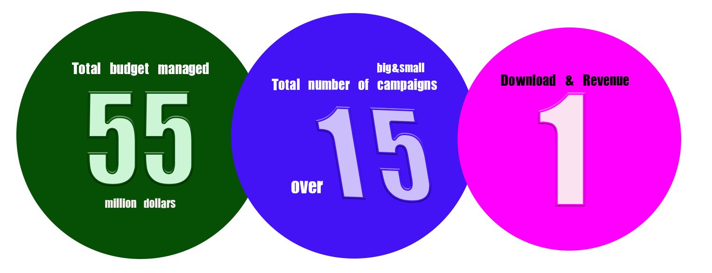

Over the past 7 years, I have participated in 2 big launching projects of mobile game (Lineage M & Lineage 2M) My roles were communicating with agencies and managing creative assets from planning creative strategies to handling media planning.

This was officially my first project to do it all on my own.
I was able to work with one of the biggest 3D cinematic company, Digic.
Even though I am not fond of games, I still love watching new trailers of console games and
Digic company was one of the company of making such trailers.
This project was the first to spend a big amount of money for such a high quality output.
Also it became the guideline & the milestone of the projects that came after this.
This was such a huge project.
I went to New York and LA for the shooting of this film.
The film took place in New York, LA, Paris, Taiwan and Osaka simultaneously.
It was the first project in which the shooting took place abroad.
It was the most expensive TVAD and also a well made film I take pride in.